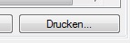

In verschiedenen Fenstern erscheint ein Menü, wenn Sie auf den 'Drucken' Button klicken, der neben einer Liste steht.

Wenn Sie 'Internet-Browser: Spalten auswählen und Drucken' auswählen, erscheint dieses Fenster. Sie können nun die Spalten auswählen, die im Browser angezeigt werden sollen.